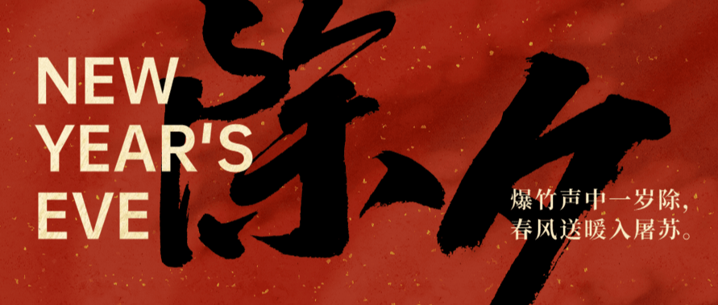
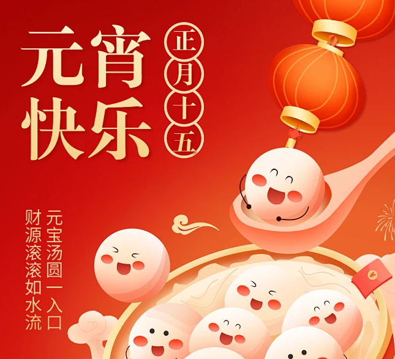
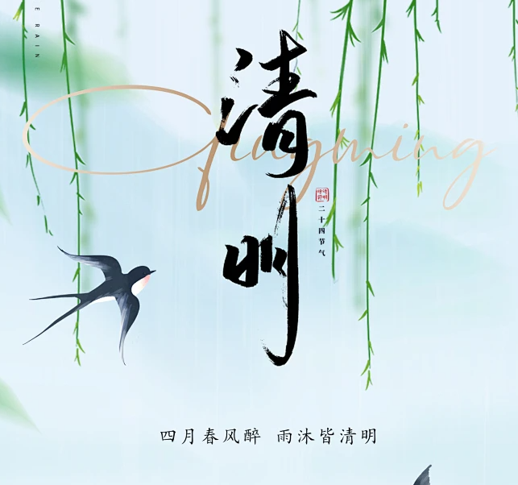
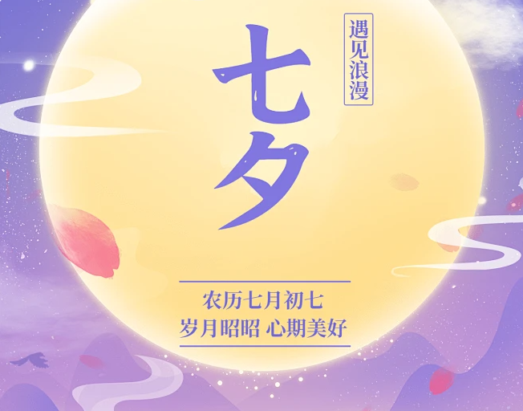
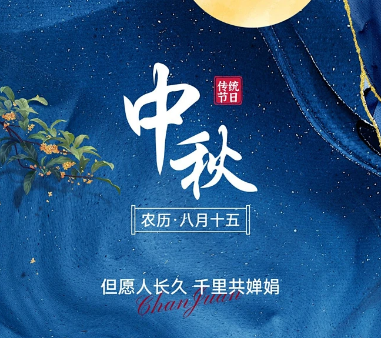
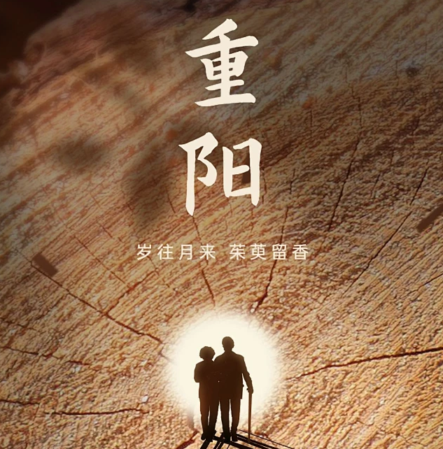

Kronologjia e Festivaleve Tradicionale Kineze
春节 Chunjie
Festa më e rëndësishme tradicionale në Kinë, e njohur zakonisht si "Viti i Ri Kinez", ka një histori prej mbi 4,000 vjetësh. Festimet gjatë Festës së Pranverës janë jashtëzakonisht të pasura dhe të larmishme, duke përfshirë zakone të tilla si ngjitja e dyvargëshave të Festës së Pranverës, qëndrimi zgjuar deri vonë në natën e Vitit të Ri, vizitat e Vitit të Ri dhe ndezja e fishekzjarreve.

元宵节 Yuan Xiao Jie
Festa e Fenerëve është një festival tradicional në Kinë, në sferën kulturore të karakterit kinez dhe midis komuniteteve kineze jashtë vendit. Ai përfshin kryesisht një sërë aktivitetesh tradicionale popullore, të tilla si vlerësimi i fenerëve, ngrënia e topave të orizit ngjitës, zgjidhja e gjëegjëzave me fenerët dhe ndezja e fishekzjarrëve.

清明节 Qing Ming Jie
Festivali Qingming është një festival i madh tradicional pranveror për adhurimin e paraardhësve, dhe pastrimi i varreve për t'u bërë nderime paraardhësve është një traditë e shkëlqyer e kombit kinez që nga kohërat e lashta. Zakone të tjera gjatë Qingming përfshijnë daljet në pranverë, mbjelljen e degëve të shelgut dhe lëkundjen në lëkundëse.

端午节 Duan Wu Jie
Festivali i Varkës së Dragoit e ka origjinën nga adhurimi qiellor dhe evoluoi nga sakrificat e lashta të dragonjve, të përdorura më vonë për të përkujtuar Qu Yuan. Zakonet kryesore përfshijnë garat me varka dragonjsh, ngrënien e zongzi-ve (qofte orizi ngjitëse), varjen e mugworth-it dhe veshjen e qeseve, të gjitha që simbolizojnë largimin e shpirtrave të këqij dhe sëmundjeve.
七夕节 Qi Xi Jie
Festivali Qixi evoluoi nga adhurimi i yjeve dhe tradicionalisht konsiderohet ditëlindja e Shtatë Motrave. Quhet "Qixi" sepse adhurimi i Shtatë Motrave zhvillohet në mbrëmjen e ditës së shtatë të muajit të shtatë hënor. Me kalimin e kohës, Festivali Qixi është mbushur me legjendën e bukur të dashurisë midis Bariut dhe Vajzës Endëse.

中秋节 Zhong Qiu Jie
Festa e Mesvjeshtës e ka origjinën nga adhurimi qiellor dhe evoluoi nga adhurimi i lashtë i hënës në mbrëmjen e vjeshtës. Që nga kohërat e lashta, ka pasur zakone popullore si adhurimi i hënës, shikimi i hënës, ngrënia e ëmbëlsirave të hënës, loja me fenerë dhe vlerësimi i luleve osmanthus, të cilat janë përcjellë deri në ditët e sotme dhe vazhdojnë edhe sot e kësaj dite.

重阳节 Chong Yang Jie
Festa e Dyfishtë e Nëntës e ka origjinën nga adhurimi qiellor, filloi në kohët e lashta, u përhap gjerësisht në Dinastinë Han Perëndimore dhe arriti kulmin pas Dinastisë Tang. Në kohët e lashta, zakonet popullore të Festës së Dyfishtë të Nëntës përfshinin ngjitjen në male për t'u lutur për bekime, daljet në vjeshtë për të vlerësuar krizantemat, veshjen e luleve të qershisë, adhurimin e perëndive dhe paraardhësve dhe mbajtjen e banketeve për t'u lutur për jetëgjatësi.
